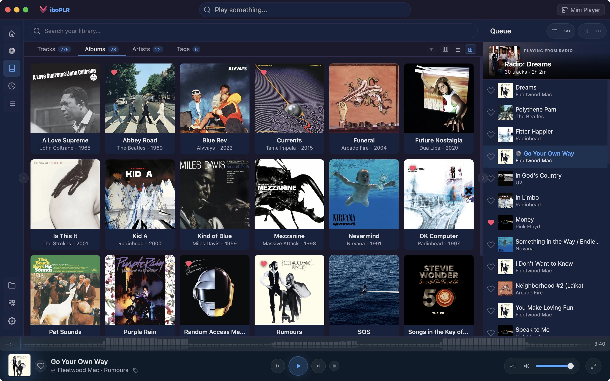
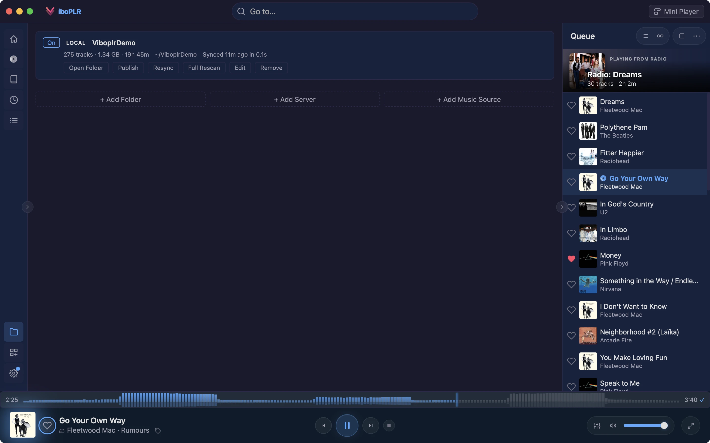
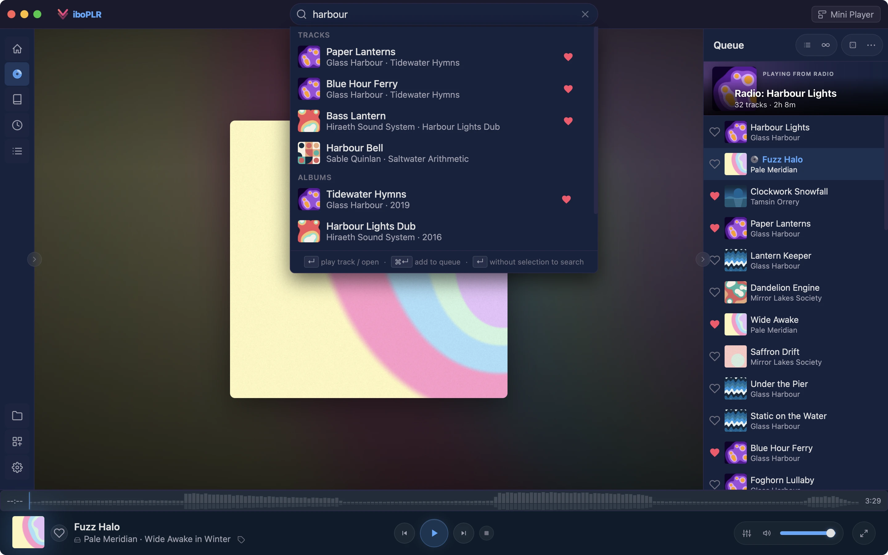

You run your own music server. Viboplr speaks Subsonic out of the box — no plugin to install — so Navidrome and other Subsonic-compatible servers sit right next to your local folders, in one library.

Enter your server’s address and login, press Test, then Connect. Viboplr imports your artists, albums and tracks, turns genres into tags, and keeps up with your server on its own — from every 15 minutes to once a day.

Server tracks are first-class: they show up in search, on the home screen, in radio stations and in playlists, just like files on your disk. When a song exists in both places, your local copy plays.

Download any server track to your computer: the original file untouched, or transcoded to AAC or MP3 by your server. Save it into a local folder and it’s there when you’re offline. Mixtape exports pull server tracks as themselves, too.
Browse a community directory of public Subsonic servers and add one to Viboplr with a click. Or use the Subsonic Browse plugin to search and stream across several servers live, without adding them to your library.
Free, open source, and built end-to-end with an AI assistant — every feature, every detail.